◆ 摘要 ◆
资金与监管双重影响下，公司质量的重要性进一步提升
外资流入带来结构变化：优质公司持续获得关注。随着外资的持续流入和外资占比的逐渐提升，外资的持股偏好也将进一步地影响A股的市场风格。通过北上资金持仓的风格分析可以发现外资对于优质公司的偏好是较为明显的。同时，随着近年来投资者结构逐渐优化和机构化进程的加速，公司基本面质量的重要性将进一步凸显。
退市新规出台，促进上市公司质量优化。2020年12月31日，沪深交易所正式发布新修订的《上海证券交易所股票上市规则》、《深圳证券交易所股票上市规则》等退市制度改革文件。新规主要内容是进一步优化上市企业质量标准，缩短退市流程，加大退市力度。此次退市机制改革强化将优胜劣汰机制从而进一步优化市场资源配置，完善国内资本市场结构。投资者将更为关注企业经营质量，公司基本面质量的重要性有望进一步提升。
六大维度构建QQC（Quantified Quality Composite）综合质量因子
将公司基本面质量分解为六个维度。根据Gordon成长模型拆解，并结合我们对于公司基本面质量的理解，将质量因子梳理为盈利能力、成长能力、盈余质量、营运效率、安全性、公司治理6个大类。并进一步地在每一类别中分别寻找样本内具有显著预测能力且稳定性较好的细分因子。
QQC综合质量因子：六大类因子等权加权减少过拟合。6大类因子之间的相关性均处在相对较低的水平，其中公司治理因子与其他大类的质量因子直接相关性均低于0.2。同时为了降低过拟合的程度，通过等权加权的方式将六大类因子结合为综合质量因子QQC。
QQC因子各样本空间内均有较强预测能力，样本外表现出色。QQC因子在不同样本空间内均具有较强的预测能力，因子在全市场的IC_IR高达0.87；在中证500样本内IC高达5.67%，多空组合的夏普比率达到2.18。QQC因子在样本外（2019-01-01至2020-12-31）的月度平均IC达到5.84%，月度胜率高达87.5%，样本外表现同样相当出色。
基于QQC的沪深300指数增强模型：超额稳定，样本外年化超额15%
沪深300指数增强的难点所在：行业与个股偏离度大，有效因子少。行业权重和个股权重的较高偏离度，以及成分股内较为有限的有效因子数量，是沪深300指数增强模型构建中较为棘手的问题。
基于QQC因子的沪深300增强：超额稳定，样本外表现出色。采用估值因子、动量因子、换手率因子、一致预期等因子与QQC因子一同作为模型底层因子构建沪深300增强组合。组合年化超额收益10.47%，跟踪误差3.37%，信息比3.11。组合自2011年至今每年度均跑赢沪深300指数，月度胜率接近80%，相对基准的最大回撤仅为3.9%。
样本外（2019-01-01至2020-12-31）年化超额收益为15.02%，跟踪误差3.65%，信息比4.11。2020年全年，组合累计收益46.58%，跑赢沪深300指数19.37个百分点。
◆ 正文 ◆
资金与监管双重影响下，公司质量的重要性进一步提升
外资流入带来结构变化：优质公司持续获得关注
近年来外资的持续流入对A股市场风格产生了逐渐的影响。在2016-2020的五年间，北向资金净流入近1.2万亿元，同时，外资持股市值占 A股流通市值比例从1.7%上升至4.8%（提升3.1个百分点），占比提升接近两倍。随着外资的持续流入和外资占比的逐渐提升，外资的持股偏好也将进一步地影响A股的市场风格。
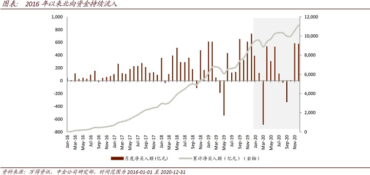
我们整理了北上资金2020年全年净流入最多的20只个股，从个股层面上直观的来看，北上资金更为青睐的是各个行业领域内的龙头公司，以及具有稳定发展前景的公司。
从具体的盈利指标上看，北上资金2020年净流入排名前20的个股的平均ROE水平高于沪深300的平均ROE水平，并且显著的高于全体A股的ROE水平。通过ROE水平可以比较直接的证明外资对于优质公司的偏好是较为明显的。

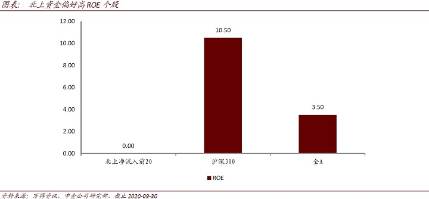
进一步的，将北上资金持仓占比大于1%的个股作为北上资金的股票组合，并对该组合的风格因子暴露度进行计算。下图为北上资金持股组合在所选取因子上的暴露程度，其中前9个因子为参照Barra模型构建9个常见因子，第10个为ROE因子。由此可见，北上资金更偏向于低Beta、大市值、高动量及高估值的股票，同时在ROE上有非常明显的正向暴露。
在外资持仓占比不断提升的同时，A股的投资者结构也在逐渐发生变化。在过去较长的一段时间内，投资者结构失衡是A股长期震荡的重要原因之一，中小散户的非理性因素助推了股市波动性。近年来，投资者结构逐渐优化，机构投资者发展较快，从近期爆款公募基金频发也可见一斑。我们认为外资流入的影响加上机构化进程的加速，将使得公司基本面质量的重要性进一步凸显。
退市新规出台，促进上市公司质量优化
2020年12月31日，沪深交易所正式发布新修订的《上海证券交易所股票上市规则》、《深圳证券交易所股票上市规则》，及《上海证券交易所科创板股票上市规则》和《深圳证券交易所创业板股票上市规则》等退市制度改革文件。
此次上交所与深交所的退市新规主要内容是进一步优化上市企业质量标准，缩短退市流程，加大退市力度。内容包括以下几点：
►完善退市指标，提高指标针对性：将退市指标分为交易类、财务类、规范类和重大违法类四大类。
►造假违法指标量化，增加限制减持：在保留原欺诈发行、重大信息披露违法、五大安全等重大违法强制退市标准的前提下，将重大财务造假指标量化。
►缩短退市时间，提高退市效率：取消暂停上市和恢复上市环节；退市整理期由 30 个交易日缩短为 15 个交易日。
伴随着退市新规的落地，质量较差的企业将被淘汰出局。此次退市机制改革强化优胜劣汰机制从而进一步优化市场资源配置，完善国内资本市场结构。
投资者应将更关注企业经营本身，公司基本面质量的重要性进一步提升。新规要求企业管理人需更加注重企业持续经营的能力，调整企业的发展战略。未来投资者也将重点关注经营稳定和业绩预增的企业。
下文中我们将着重从量化多因子的角度出发，构造多维度的量化综合质量因子QQC（Quantified QualityComposite），并展示其应用于指数增强策略的实际效果。
质量因子定义及细分类别
在定义我们的综合质量因子之前，首先可以从定性的角度来描述一个优质的公司：
► 盈利能力强且具有稳定的盈利能力；
► 成长能力强且具有稳定的成长能力；
► 财务情况稳定，流动性好，资本结构合理；
► 运营效率高，周转能力强；
► 公司治理情况优良，等等。
在上述条件满足的情况下，则可以认为这个公司的整体质量较高。学术界在研究中也有很多中对于质量指标定义方式的探讨和实践。例如，Asness（2017）通过对Gordon成长模型的分解，来定义质量因子。原始的Gordon成长模型为：
利用净资产B（Book Value）来缩放价格, 使其在一段时间内和横截面上更加稳定。等式两边同时除以净资产B：
等式（2）则可以理解为：
等式右侧的四个部分就是对于公司质量定义的四个基础组成部分，其中，Profitability 为盈利能力，可以由ROE、ROA、毛利率在内的多个盈利能力指标表示；payout_ratio表示股东所得红利在总利润中的占比，主要用来衡量公司管理层对于股东的友好程度；growth为成长能力，可以由不同的成长因子来评价；required return则可以用来反映公司的稳定性或者安全性，因为要求回报率越高的公司，自然风险越大。
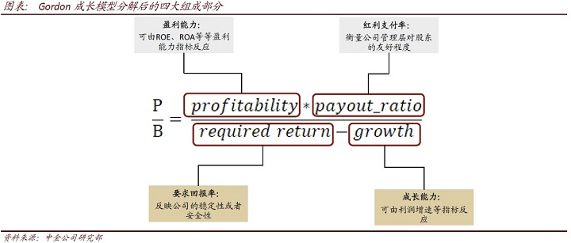
根据上述分析，并结合我们对于公司基本面质量的理解，我们将质量因子梳理为盈利能力、成长能力、盈余质量、营运效率、安全性、公司治理这6个大类，如下图所示：
常用质量因子单因子表现
首先我们分别对盈利能力、成长能力、盈余质量、营运效率、安全性、公司治理这6个大类质量指标中的单因子进行全面的测试，并在每个大类中挑选满足一定筛选条件（IC大于2%，IR大于0.3，tstats大于3）的因子来构成大类复合因子（注：若某一大类的因子表现均不满足上述条件，则挑选IC_IR表现较好的具有代表性的此类因子作为基础因子）。为了降低过拟合的程度，下文中的因子测试时间段均为2009-01-01至2018-12-31的样本内时间，并将2019-01-01至2020-12-31作为样本外检验综合因子的预测能力和选股能力。
盈利能力（Profitability）
盈利能力可以说是质量因子中最重要也最受关注的一类指标，不同的人对于盈利能力的衡量标准也会略有不同。例如上文提到的Asness（2017）在定义QmJ（Quality minus Junk）因子时对于盈利能力方面的指标采用了6个指标等权相加的方式来打分，6个指标分别为：总资产毛利率（GPOA）、ROE、ROA、经营现金流/总资产（CFOA）、毛利率（GMAR）、净利润现金占比（ACC）。
公司利润表中直接反映公司赚钱能力的项目包括毛利润、营业利润、净利润，这三项中使用最广泛的净利润一般被认为可以比较全面的反映该公司在剔除费用项之后的盈利情况。但是在一些行业中（例如消费类行业）毛利润指标会具有超越净利润的选股能力。营业利润相关因子的预测能力也常常优于净利润类因子。学术界和业界也对毛利润和营业利润的优势有不少的分析，因此这三个利润类的指标可以说是各有千秋，我们在盈利能力类因子中会较为全面的对涉及这三类利润指标的因子做测试。
在筛选盈利能力因子时，我们将首先对盈利能力方面的因子做全面的测试，测试的盈利能力因子明细及其构造方式说明如下表所示。
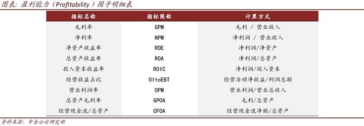
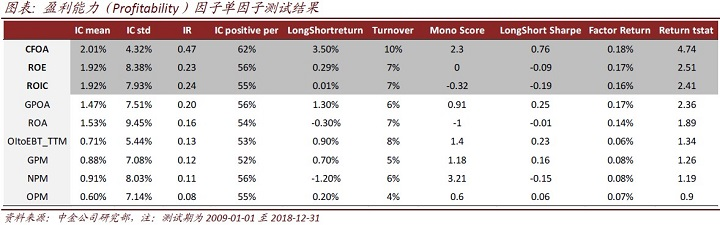
经营现金流/总资产（CFOA）具有相对较高的预测能力，其因子IC_IR高达0.47。同时，ROE和ROIC的IC_IR也超过0.2。结合上述测试结果，并考虑到ROE和ROIC指标是使用率较高的盈利能力类指标，我们将CFOA、ROE、ROIC作为盈利能力类因子的子指标，并等权加权后得到盈利能力类因子的复合因子（Profitability）。
成长能力（Growth）
成长因子是量化多因子体系中的一类很重要的风格因子，同时也是投资者关注度较高的一类因子。因为从投资的最根本目的出发，具有成长潜力或者发展潜力较大的公司才会更有可能给投资者带来更多回报，投资者也会更愿意为高成长的公司支付较高的股价。
在成长因子的构造方式上，我们将对每一个增速类（同比增速、环比增速）因子均使用与分母值回归取残差的处理方式，来减小前期值对增速因子分布上的影响。
同时，引入几个较为创新的成长因子构造方式（以净利润NP为例）：
►加速度指标：NP_Acc
加速度指标的计算方法是：利用连续N个季度的单季利润，对期数的二次方程进行回归，取二次项系数作为业绩增长加速度的代理变量，回归公式如下：
其中，NP为单季度利润，t为季度数，为上市公司业绩增长加速度的代理变量，越高，表示业绩增长的加速度越高。该指标的计算涉及到一个参数N，依据参数敏感性的测试结果，在后续的测试中均取相对稳健的N=8。
►稳健增速指标：NP_Stable
稳健增速指标刻画的是过去一段时间内业绩增速的稳定性，当指标值比较高的时候，表示过去一段时间内上市公司的业绩保持了稳定增长的态势。它的计算方式是用过去N期的利润增速均值除以利润增速标准差。在后续的测试中，我们依然取N=8这一参数，即用过去两年的利润增速数据计算该指标。
►稳健加速度指标：NP_SD
稳健加速度指标则是稳健增速指标的一阶差分。
►业绩趋势因子：QPT
业绩趋势模型采用分层筛选的方式实现，首先依据业绩增速指标筛选增速较高的三分之一的股票作为基础股票池；再依据业绩增长加速度指标在基础股票池中筛选三分之一的股票作为最终持仓。我们将该模型进行因子化同样考虑分层打分的方式：
• 首先，依据业绩增速指标将全市场股票均分成三组，给每组股票打分，增速最高一组得分为3，增速最低一组得分为1，中间一组得分为2；
• 其次，每一组内依据业绩增长加速度指标进行打分（标准分法），加速度越高得分也越高；
• 最后，将两步骤的得分相加为每只股票的最终得分。
我们运用业绩预告数据（净利润下限）降低财务公告数据的滞后性后，在构造月频的业绩趋势因子时，需每月对业绩数据进行更新；当同时存在不同类型的业绩报告时，优先级次序依据其准确性确定，即：定期报告>业绩快报>业绩预告。
结合上述新增成长类因子，和盈利能力指标的变动类因子，我们将成长能力的大类因子梳理如下：
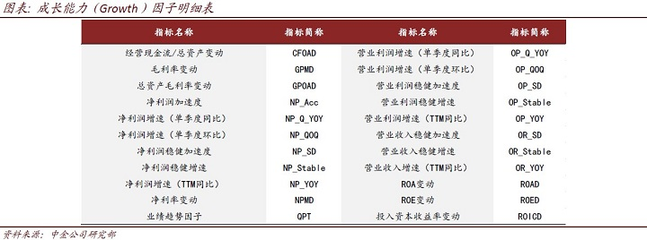
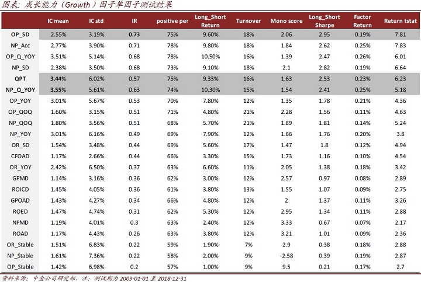
综合考虑收入成长能力和收入增速稳定性的因子营业收入稳健加速度因子（OP_SD）具有较高的预测能力，其因子IC_IR高达0.73，多空组合的Sharpe比率高达2.95，单调性得分也超过2。同时，成长能力因子中IC均值最高的因子分别为：营业利润增速（单季度同比）OP_Q_YOY、净利润增速（单季度同比）NP_Q_YOY、业绩趋势因子（QPT）。
营运效率（Operation）
营运效率是指公司运用资产的效率或者有效程度，可以反映公司资金的周转状况。营运效率的高低取决于企业营运状况的好坏及管理水平的高低。例如，存货周转率、总资产周转率都是很常用的用来衡量公司营运效率的指标，在此基础上我们也将上述指标的变动指标作为因子进行了测试，尝试从营运效率改善的角度寻找具有更好预测能力的营运效率因子。
产能利用率提升因子（OCFA，Operation Cost on FixedAssets）的因子是我们采用创新基本面因子挖掘框架挖掘出来的具有较强预测能力的营运效率类因子，其具体的构造方式为，营业总成本在固定资产上滚动回归取最近一期残差，具体的：
这里我们采用残差项来表征产能利用率的提升。
结合上述新增的产能利用率因子，我们将营运效率的大类因子梳理如下：
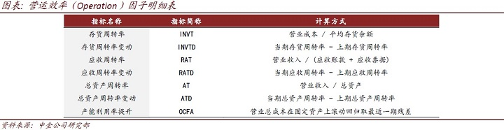
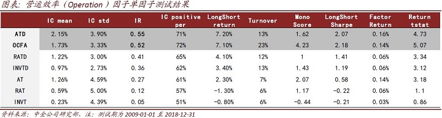
总资产周转率变动指标ATD的各项表现均优于其他营运效率因子，IC_IR达到0.55，多空年化收益7.20%，多空组合的Sharpe比率也达到2.07，该因子的预测能力和稳定性均较好。OCFA因子IC_IR表现较好，且与其他常用因子相关性较低，因此，我们将满足入选条件（IC大于2%，IR大于0.3，tstats大于3）的因子ATD和创新基本面因子OCFA作为营运效率类因子的子指标。
盈余质量（Accrual）
盈余质量类指标能够为投资者提供关于上市公司的盈余信息，如果上市公司进行了盈余操纵或管理，那么其财报盈余向投资者传递的信息质量往往较差；较差的盈余信息不利于我们合理地对公司的未来业绩做出预测，因此对上市公司盈余质量好坏的评价具有重要的意义。
应计利润的定义通常为：
应计利润 = 营业利润 - 经营性现金流量净额
同时，为了使得不同规模的公司的该项指标能够进行横向比较，我们采用将应计利润除以营业利润作为应计利润占比指标，来作为盈余质量指标的一种构建方式，明显的，该指标数值越大，标的盈余质量越差。因为现金利润来源于当期经营净现金流的增加；而应计利润则更多反映对未来现金流的确认，应计利润中存在较大的利润操纵空间，从而导致应计利润持续性较差，拥有较高应计利润的公司未来盈余往往会出现下滑。所以基于以上的逻辑，应计利润占比越大的公司，盈余质量越差。
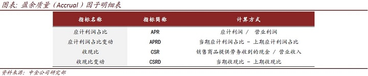
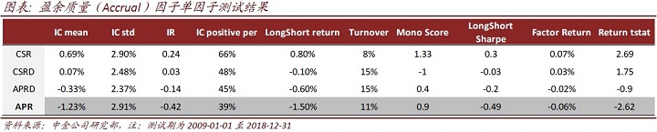
我们同时构造了收现比因子（CSR）来衡量公司主营业务收入背后现金流量的支持程度。该指标越高，说明公司收入的变现能力越强。反之，说明公司当前账面收入高，而实际现金收入低，有很大一部分形成了应收账款，这时可以认为公司的整体盈余质量较低。
上述测试的盈余质量因子整体预测能力相对较弱，其中，应计利润占比（APR）因子的负向预测能力相对较强，IC均值为-1.23%，IC_IR达到-0.42。因此在盈余质量方面的因子中，选择APR作为基础因子。
安全性（Safety）
Asness（2017）在定义QmJ因子时对于安全性方面的指标给予了较高的权重，文章认为前文公式（3）中的必要报酬率（requiredreturn）是比较难以定义的或者说学术界对其定义方式的争议仍然较大。因此文章采用了一种更为通俗的方式来定义安全性（safety），其主要关注的指标包括：低beta，低波动，杠杆率，信用风险等等。
由于beta和股价波动这些指标更多的反映来自市场内的投资者行为对股价所产生的影响，其与公司本身的质量的相关性是否较高我们认为有待验证。同时，考虑到A股与海外成熟市场的参与者结构差异，散户占比较大的A股市场上个股的价格波动更容易受到公司本身质地意外的因素影响，因此我们暂未将beta和波动率因子纳入安全性因子中测试。这里我们讨论的安全性将主要从公司的经营杠杆等方面考虑：
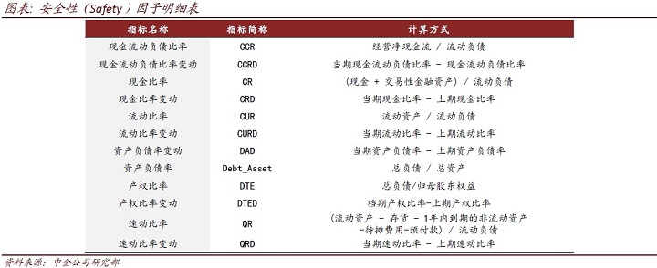
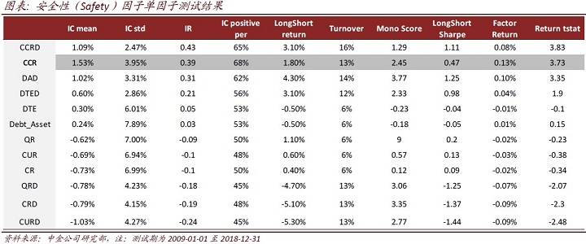
上述测试的安全性因子整体预测能力不高，其中，现金流动负债比率（CCR）因子具有较好的预测能力，IC均值为1.53%，IC_IR达到0.39，因子收益均值为0.13%，月度胜率68%。因此我们在安全性方面的因子中，选择现金流动负债比率CCR作为基础因子。
公司治理（Governance）
公司治理也是一个较为重要的评判上市公司经营质量的指标，通俗理解只有公司治理能够影响公司股票价格和股票收益，从而产生治理溢价，投资者才能通过比较上市公司的治理水平选择配置在未来可能获得更高溢价的股票。
本文采用股权结构与股东权利、董事会构成、管理层激励、信息披露与合规、激励约束机制等多维度衡量公司的治理水平。具体的指标和权重设置如下表所示：
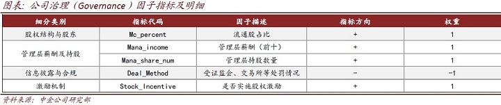
在简单加权的方法下，将流通股占比、管理层薪酬、管理层持股数量、受证监会、交易所等处罚情况、是否实施股权激励这5大指标根据方向调整等权相加结合成为公司治理因子（Governance）。
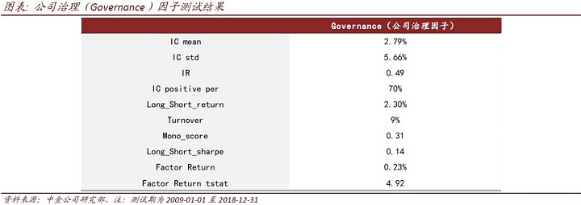
公司治理因子的整体表现尚可，IC均值为2.79%，IC_IR达到0.49，因子收益均值为0.23%，而多空收益表现一般，单调性得分较低，因子的收益稳定性相对较弱。
QQC综合质量因子
六大类因子综合表现：样本内成长因子优势明显
为了构造一个全面且综合的质量因子，我们首先将上文整理的6大类指标按照大类内因子等权加权的方式构造6个大类因子，并比较他们的因子表现以及相关性。可以看到上面整理的这6类质量指标的整体预测能力和收益稳定性仍存在较大的差异，其中成长能力指标的IC和IC_IR均显著高于其他5类指标，而盈利能力指标的表现则相对较弱：
从IC序列的相关性矩阵来看，6大类质量因子之间的相关性均处在相对较低的水平，其中，公司治理因子与其他大类的质量因子直接相关性均较低，而营运效率与成长能力之间的相关性为0.6，相对较高。
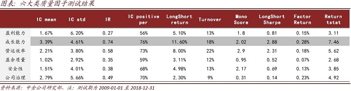
因此，在将上文梳理完成的盈利能力、成长能力、盈余质量、营运效率、安全性、公司治理这6个大类质量指标综合为一个综合的质量因子时，可以考虑的加权方式主要包括：等权加权，IC加权，IC_IR加权等等。
不同加权方式对比：等权加权减少过拟合
等权加权是最为直观的加权方式，其优点在于逻辑直观，减少参数优化过程，从而减小过拟的概率。但IC加权和IC_IR加权也是较为常用的因子合成方法，这两种加权方式下可以比较有效的提高预测能力较高的因子的权重占比，从而提高合成因子的预测能力。因此我们主要比较了下述三种因子加权方式：
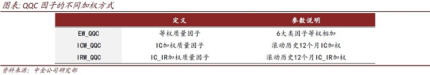
下表给出了不同加权方式下的综合质量因子表现统计，由于IC加权或者IC_IR加权均需要滚动历史12个月的IC数据，因此因子测试的起始时间统一为了2010-01-01.
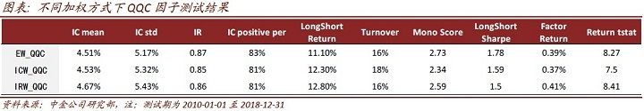
IC_IR加权方式下得到的综合质量因子IRW_QQC的IC_IR表现最优，但多空组合的夏普比率1.50却略低于其他两种组合方式。同时，考虑到IC_IR加权方法下，成长能力因子的权重会显著高于其余因子，因此综合质量因子会更多的暴露在成长风格上，一旦成长风格出现回撤时，整体质量因子也会遭遇较大回撤。
而等权加权方式下的QQC因子在IC或者IC_IR的表现上与另外两种加权方式下的因子差异并不明显，并且等权相加的方式逻辑更为直观，省去了滚动计算IC或者IC_IR的时间区间长度的参数优化过程，一定程度上避免了样本内的过拟概率。
QQC因子各样本空间内均有较强预测能力，样本外表现同样出色
基于以上的分析，我们定义等权加权方式下的EW_QQC因子为综合质量因子，命名为QQC（Quantified Quality Composite）。
该因子在中证全指、中证500、沪深300不同样本空间内，均具有较强的预测能力，因子的IC均高于3%，IC_IR均大于0.5。其中，QQC在全市场的IC_IR高达0.87；在中证500样本内的表现也较为出色，因子IC高达5.67%，因子平均收益也达到0.48%，多空组合的夏普比率达到2.18。
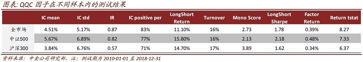
QQC因子在样本外同样具有显著的预测能力，样本内和样本外的表现均十分出色。从因子IC来看，QQC因子在样本外区间（2019-01-01至2020-12-31）的月度平均IC达到5.84%，样本外月度胜率高达87.5%，样本外表现甚至优于样本内测试结果。这一结果也一定程度上归功于我们采取的等权加权方式，减小了过拟合导致样本外表现下滑的概率。
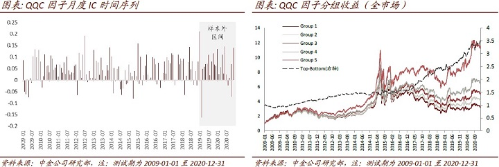
QQC应用于指数增强：沪深300增强样本外年化超额15个百分点
沪深300指数增强：难度较大，基本面指标更有效
在各类宽基指数的指数增强模型中，沪深300指数增强模型是关注度较高但同时难度也较高的模型。近几年来沪深300指数的相对强势的表现，和沪深300股指期货贴水较小的优势，是导致沪深300指数增强策略关注度上升的主要原因。
同时，采用量化多因子手段构建沪深300指数增强组合是比较具有难度的，我们总结沪深300指数增强的难点主要包括：
►行业分布不均衡，个股权重差异大
将沪深300与中证500这两个指数的成分股行业分布做一个统计，可以发现沪深300内的300只股票行业分布更为不均衡，其中食品饮料行业、银行行业与非银金融行业的权重占比较高：
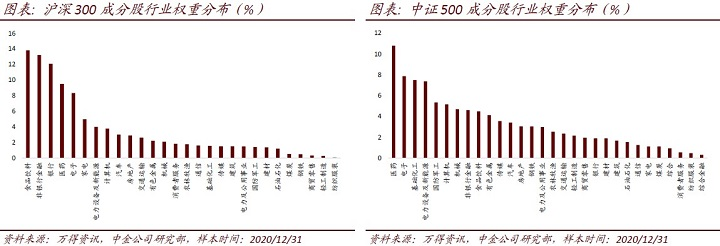
通常在分析沪深300指数成分股时，前面提到的行业分布偏离度高的问题是比较容易关注到的信息。但如果仔细观察分析沪深300指数成分中的个股权重，就可以发现沪深300的个股权重也存在很大的分布偏离。
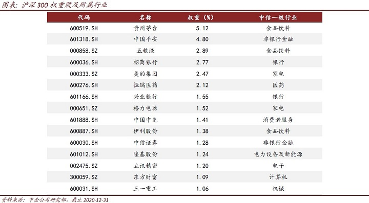
将沪深300内权重大于1%的个股作为权重股，则可以发现，截止2020年12月31日，占沪深300成份个股1/20的15只权重股，权重之和已达到31.88%。
►有效因子数量少，且大部分为基本面因子
沪深300指数增强较为困难另外一个重要原因在于：沪深300内的有效因子数量较少。
我们以因子库中，包括估值因子，规模因子，成长因子，质量因子，杠杆因子，动量因子，波动因子，技术因子，流动性因子，情绪类因子等共10大类200个细分因子为例，测试这些因子在沪深300成分股内的预测能力和选股能力。以IC绝对值大于3%，IC_IR绝对值大于0.3为标准，沪深300成分股内，满足上述标准的具有一定选股能力的因子个数仅有20个，有效因子占比只有10%，如下图所示：
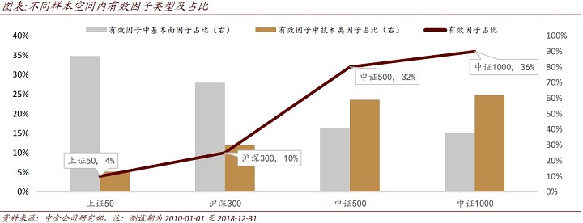
沪深300内的有效因子中以基本面类型的因子为主，基本面因子的占比超过65%。而这一特征与中证500或者中证1000是截然相反的。
基于QQC的沪深300指数增强：样本外表现出色，年化超额15%
基于前文的分析，我们发现沪深300中基本面相关的因子更具有超额收益能力，同时沪深300成分股的行业偏离和个股偏离都较为严重，我们构造了基于QQC综合质量因子的沪深300指数增强模型，模型的具体设置如下：
因子选择：选择包括估值因子、动量因子、换手率因子、一致预期类因子在内的沪深300内较为有效的因子，与QQC因子一同作为模型底层因子。
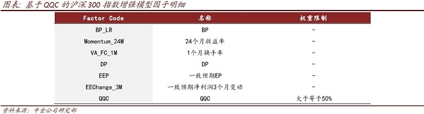
因子权重设置：滚动24个月IC_IR（QQC因子的权重若小于50%，将其调整至50%，其他因子再做归一化处理）
组合优化及参数设置：
（1）成分股内选股
（2）约束行业偏离度不超过5%；
（3）约束市值因子暴露度不超过5%；
（4）约束个股权重相对沪深300成分股原始权重的偏离度不超过1个百分点（绝对值）；
（5）月度调仓，费率假设为单边0.3%
（6）样本内2011-01-01至2018-12-31，样本外为2019-01-01至2020-12-31
模型表现：组合年化超额收益为10.47%，跟踪误差3.37%，信息比3.11。组合自2011年至今每年度均跑赢沪深300指数，月度胜率接近80%，相对基准的最大回撤仅为3.9%。
样本外（2019-01-01至2020-12-31）组合年化超额收益为15.02%，跟踪误差3.65%，信息比4.11。2020年全年，组合累计收益46.58%，跑赢沪深300指数19.37个百分点，表现相当出色。
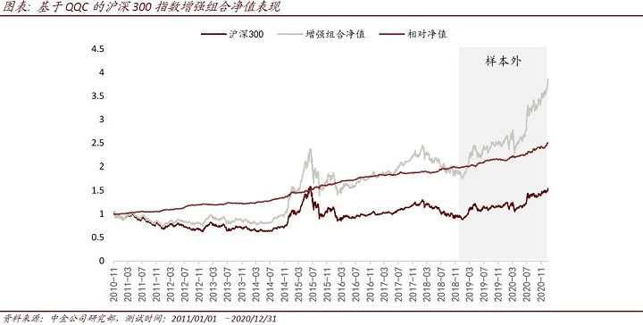
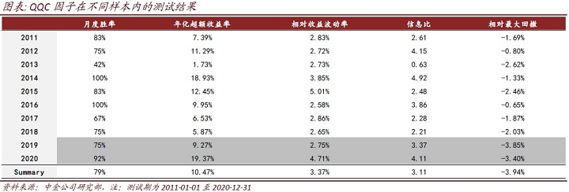
综上，采用基于QQC因子的沪深300指数增强模型样本内外均具有稳定的超额收益能力。我们的模型为了减少权重股收益波动对模型的表现的影响并提高超额收益的稳定性，在QQC因子结合多因子打分的基础上，结合优化器对最终持仓组合的行业暴露、市值暴露和个股权重偏离度进行约束。
基于QQC综合质量因子的沪深300增强组合具有稳定的超额收益，组合年化超额收益为10.47%，跟踪误差3.37%，信息比3.11。组合自2011年至今每年度均跑赢沪深300指数，月度胜率接近80%，相对最大回撤仅为3.9%。2020年全年，组合累计收益46.58%，跑赢沪深300指数19.37个百分点，表现相当出色。
文章来源
本文摘自：2021年1月14日已经发布的《量化多因子系列（1）：QQC综合质量因子与指数增强应用》